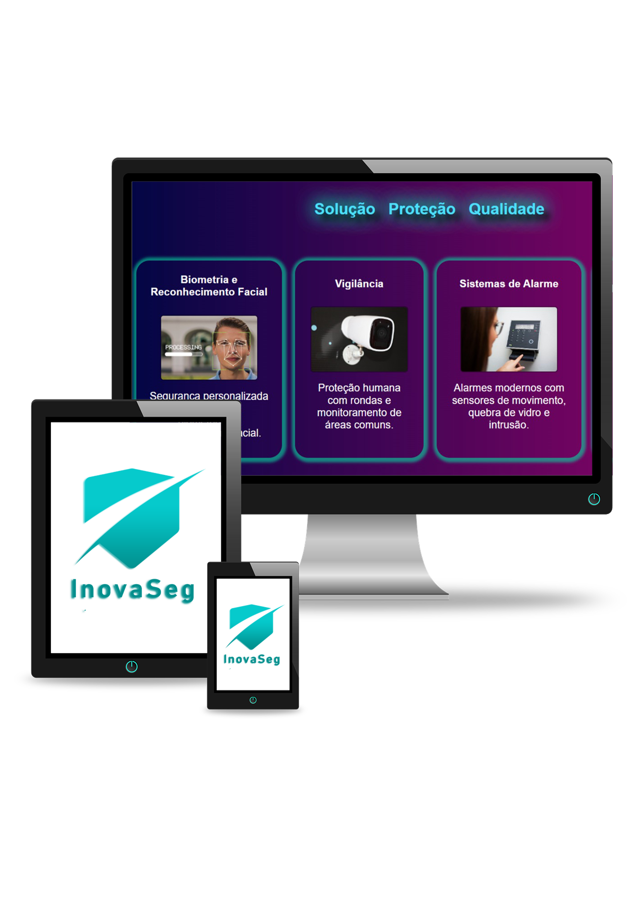

Foco na Tranquilidade e Proteção
Sua segurança, nossa prioridade. Garanta a tranquilidade do seu bairro, prédio ou condomínio com nossos
serviços de segurança personalizados. Contamos com monitoramento 24 horas por câmeras de alta resolução
e resposta rápida em caso de emergência. Em menos de 10 minutos, uma viatura policial estará no local,
garantindo a sua proteção.
Mais segurança, mais tranquilidade
Segurança de ponta com nossos sistemas de monitoramento 24 horas e reconhecimento facial. Tenha acesso
remoto às imagens das câmeras e receba alertas instantâneos em seu celular. Conte com a nossa equipe
especializada para garantir a sua proteção e a de sua família.
Segurança no Seu Condomínio: A Importância e os Benefícios dos Serviços de Segurança
A terceirização de serviços de segurança é uma solução eficaz para garantir a proteção e tranquilidade em
empresas, condomínios, residências e demais propriedades. Entre os serviços essenciais, destaca-se a
segurança patrimonial, fundamental para manter a ordem e proteger o ambiente contra riscos e ameaças.
Mas você sabe quais são as atribuições de um serviço de segurança terceirizado?
É essencial que gestores, síndicos e moradores compreendam a importância da presença de profissionais
qualificados para monitorar e atuar em situações de risco, assegurando a proteção do patrimônio e das
pessoas envolvidas.
O que é o serviço de segurança e por que ele é importante?
Garantir a segurança em um ambiente residencial ou empresarial não é uma tarefa simples. Esses locais
geralmente possuem grande circulação de pessoas e o uso comum de várias áreas, o que demanda medidas de
proteção eficientes para evitar incidentes e manter o bem-estar de todos.
A segurança é responsável por zelar pela integridade das instalações, prevenindo e reagindo a situações de
risco como invasões, roubos e vandalismo. Além disso, a presença de uma equipe treinada e equipamentos
adequados assegura que todas as medidas de prevenção estejam em pleno funcionamento.
Na prática, o serviço de segurança é uma peça essencial para a proteção do patrimônio e das pessoas. Os
profissionais são responsáveis por monitorar áreas internas e externas, identificar situações suspeitas e
agir prontamente para evitar incidentes, além de garantir a operação eficiente de sistemas como portões
eletrônicos, câmeras e alarmes.
Quais são as atribuições dos profissionais de segurança?
Muitas pessoas podem não conhecer a amplitude das atribuições de uma equipe de segurança, e às vezes, essas
responsabilidades são confundidas com outras atividades. Confira algumas das principais funções dos
profissionais de segurança:
- Monitorar e garantir o cumprimento das normas de segurança do condomínio ou empresa.
- Inspecionar áreas comuns, como estacionamentos, corredores e espaços de lazer, verificando a necessidade
de melhorias ou reparos.
- Operar e manter em funcionamento sistemas de segurança, como câmeras, alarmes, portões automáticos e
iluminação.
- Agir em situações de emergência, acionar autoridades competentes e realizar primeiros socorros, quando
necessário.
- Auxiliar na identificação e no controle de entrada e saída de pessoas e veículos.
- Realizar rondas regulares para prevenir e detectar possíveis ameaças.
- Orientar moradores e colaboradores sobre as melhores práticas de segurança.
Benefícios de contar com um serviço de segurança
Empresas e condomínios de todos os tamanhos encontram na terceirização da segurança uma forma de aprimorar a
proteção de suas instalações. A presença de uma equipe especializada oferece várias vantagens, como:
Melhoria no desempenho geral dos serviços prestados
A segurança qualificada contribui para o funcionamento eficiente de todo o ambiente, indicando áreas de
vulnerabilidade e assegurando que todos os serviços de segurança operem corretamente.
Suporte à administração
A equipe de segurança permite que os gestores e síndicos possam se concentrar em questões estratégicas e
administrativas, enquanto a proteção do local fica a cargo de profissionais especializados.
Redução de riscos e erros
Profissionais de segurança treinados são capazes de identificar e agir de forma preventiva, evitando
situações perigosas antes que elas ocorram, além de minimizar erros operacionais.
Prevenção de ameaças
Com inspeções regulares e manutenção preventiva dos sistemas de segurança, a equipe terceirizada pode
antecipar problemas, garantindo a proteção contínua e evitando despesas com reparos emergenciais.
Terceirize a segurança da sua empresa ou condomínio com a Segurança SJC
A terceirização do serviço de segurança permite uma maior qualificação e eficiência das atividades,
otimizando a gestão e reduzindo custos com pessoal e treinamentos. Para garantir um serviço de alta
qualidade, é essencial contar com uma empresa de confiança, que trabalhe em conformidade com a legislação,
tenha processos eficientes e profissionais capacitados.
A Segurança SJC está há mais de 10 anos no mercado, oferecendo soluções personalizadas em
segurança e tecnologia para proteger o seu patrimônio. Com foco na excelência e na tranquilidade dos nossos
clientes, nossa equipe está preparada para atuar de forma preventiva e emergencial, assegurando a segurança
do seu condomínio ou empresa.
Quer saber mais sobre nossos serviços de segurança? Entre em contato conosco!